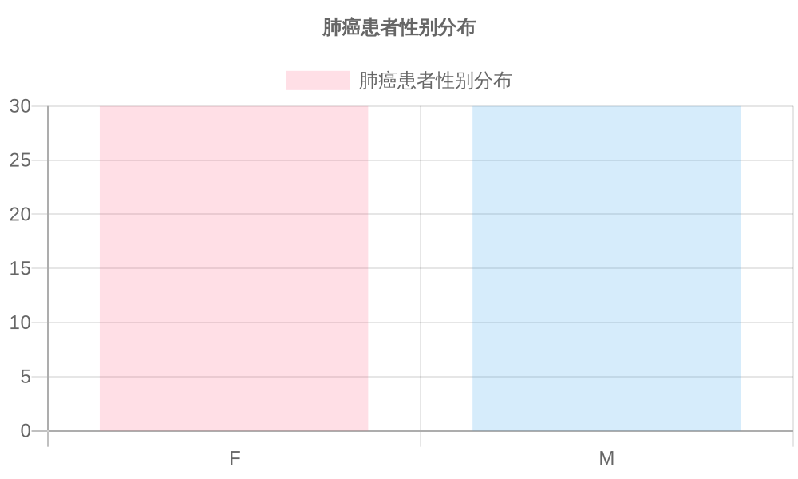
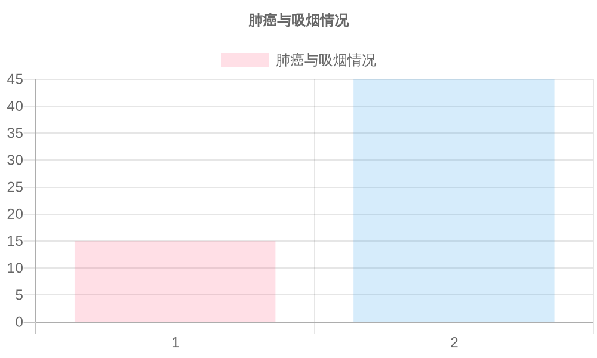
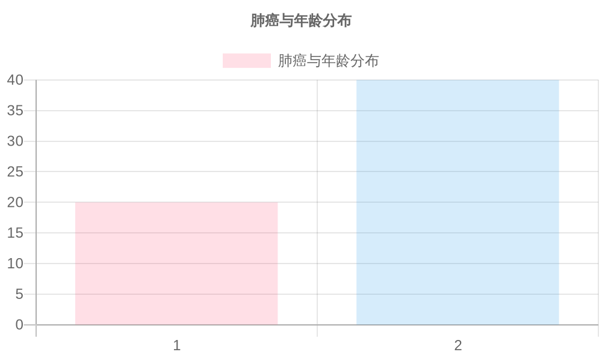

1. 肺癌患者性别分布
根据图表显示，肺癌患者在性别上的分布是平均的，女性和男性各占一半。这表明在这份数据集中，性别并不是影响肺癌发生的一个显著因素。
2. 肺癌与吸烟情况
根据图表显示，吸烟者（值为2）患肺癌的比例明显高于不吸烟者（值为1）。这表明吸烟与肺癌之间存在显著的相关性。
3. 肺癌与年龄分布
根据图表显示，年龄较大的人群（值为2）患肺癌的比例明显高于年轻人群（值为1）。这表明年龄是一个与肺癌发生显著相关的因素。
结论
1. 性别：在这份数据集中，性别并不是影响肺癌发生的一个显著因素。
2. 吸烟情况：吸烟与肺癌之间存在显著的相关性，吸烟者更容易患上肺癌。
3. 年龄：年龄较大的人群更容易患上肺癌，年龄是一个与肺癌发生显著相关的因素。
这些发现表明，预防肺癌的关键在于控制吸烟以及对高风险年龄群体进行定期筛查。